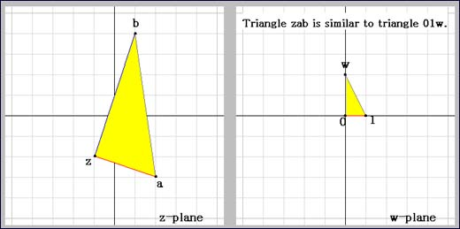
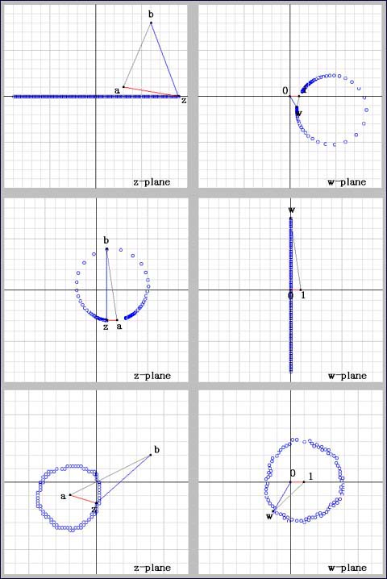

Complex-valued Function w = (z - b) / (z - a)
Each of the points of z-plane and w-plane is regarded as a complex number.
To every complex number z, here corresponds a complex number w under a complex-valued function w = (z - b) / (z - a).
Try to find out what characteristics this function has using the buttons or dragging the point z,a,b or w.
One of the most sygnificant characteristics is the similarity between two trianlges zab and 01w.
You can understand it considering that w should rotate and enlerge
(a - z) up to (b - z) by multiplication
(a - z) x w = (b - z)

Example:
z = -1 - 2i
a = 2 - 3i
b = 1 + 4i
b - z = 2 + 6i
a - z = 3 - i
w = (b - z)/(a - z) = (2 + 6i)/(3 - i)
= (2 + 6i)(3 + i)/(3 - i)(3 + i)
= ( 6 + 2i + 18i - 6)/(9 + 1)
= 20i/10 = 2i
They are similar right angled triangles.
You can observe that a circle (including straight line) on z-plane corresponds to a circle (including straight line) on w-plane.

Though some circles are not so obvious in this version of applet, you will be able to suppose that they are circles.
You might as well check this fact by yourself.